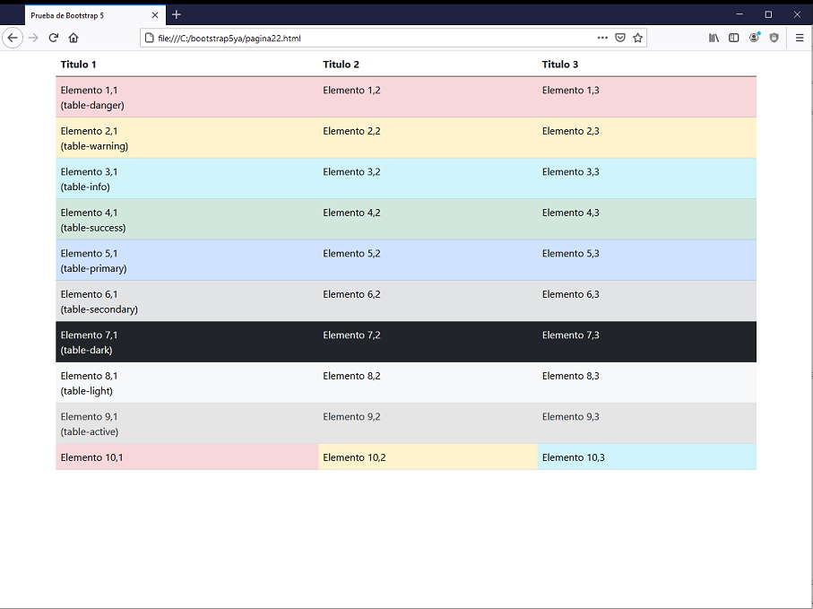

Bootstrap dispone de 9 clases que a través de colores intentan transmitir un estado, por ejemplo peligro, cuidado, éxito etc.
Podemos aplicar estas clases contextuales a los colores de fondo de una fila o celda de una tabla.
Las 9 clases son:
Veamos una tabla asignando estas clases a filas y celdas de una tabla:
<!doctype html>
<html>
<head>
<title>Prueba de Bootstrap 5</title>
<meta charset="utf-8">
<meta name="viewport" content="width=device-width, initial-scale=1, shrink-to-fit=no">
<link href="https://cdn.jsdelivr.net/npm/bootstrap@5.0.0/dist/css/bootstrap.min.css" rel="stylesheet" integrity="sha384-wEmeIV1mKuiNpC+IOBjI7aAzPcEZeedi5yW5f2yOq55WWLwNGmvvx4Um1vskeMj0" crossorigin="anonymous">
</head>
<body>
<div class="container">
<table class="table">
<thead>
<tr>
<th>Titulo 1</th>
<th>Titulo 2</th>
<th>Titulo 3</th>
</tr>
</thead>
<tbody>
<tr class="table-danger">
<td>Elemento 1,1<br> (table-danger)</td>
<td>Elemento 1,2</td>
<td>Elemento 1,3</td>
</tr>
<tr class="table-warning">
<td>Elemento 2,1<br> (table-warning)</td>
<td>Elemento 2,2</td>
<td>Elemento 2,3</td>
</tr>
<tr class="table-info">
<td>Elemento 3,1 <br> (table-info)</td>
<td>Elemento 3,2</td>
<td>Elemento 3,3</td>
</tr>
<tr class="table-success">
<td>Elemento 4,1<br>(table-success)</td>
<td>Elemento 4,2</td>
<td>Elemento 4,3</td>
</tr>
<tr class="table-primary">
<td>Elemento 5,1<br>(table-primary)</td>
<td>Elemento 5,2</td>
<td>Elemento 5,3</td>
</tr>
<tr class="table-secondary">
<td>Elemento 6,1<br>(table-secondary)</td>
<td>Elemento 6,2</td>
<td>Elemento 6,3</td>
</tr>
<tr class="table-dark">
<td>Elemento 7,1<br>(table-dark)</td>
<td>Elemento 7,2</td>
<td>Elemento 7,3</td>
</tr>
<tr class="table-light">
<td>Elemento 8,1<br>(table-light)</td>
<td>Elemento 8,2</td>
<td>Elemento 8,3</td>
</tr>
<tr class="table-active">
<td>Elemento 9,1<br>(table-active)</td>
<td>Elemento 9,2</td>
<td>Elemento 9,3</td>
</tr>
<tr>
<td class="table-danger">Elemento 10,1</td>
<td class="table-warning">Elemento 10,2</td>
<td class="table-info">Elemento 10,3</td>
</tr>
</tbody>
</table>
</div>
</body>
</html>
Luego tenemos como resultado colores distintos en cada fila y la última fila las celdas con distintos colores:

La idea de utilizar estas clases es ser consistente en nuestro sitio cuando indicamos: peligro, cuidado, éxito etc. y si además utilizamos los que propone Bootstrap muchos sitios de internet serán consistentes con este juego de colores y el usuario comprenderá más rápido la dinámica del sitio web.